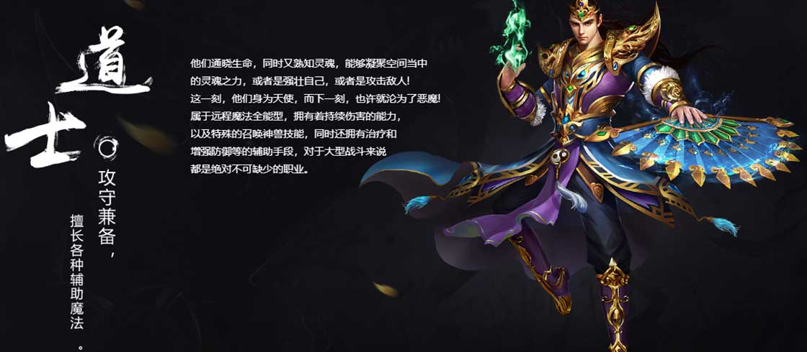

游戏背景
还是那片熟悉的大陆，在这里再次开启你的沙城烟云！
边界村早期被人认为是玛法大陆的最南端，曾经是反攻半兽人军团的根据地。在这里，杀鹿取肉是再熟悉不过的场景，稻草人和钉耙猫是耳熟能详的怪物。
沃玛森林位于比奇城东北，盛产的千年乌木正是打造乌木剑的材料，有谁还记得“三尺木剑怀天下，一把裁决定江山。”森林深处随处可见半兽人军团的战士们，甚至隐约可以见到他们的营寨。
比奇矿区好似比奇省的一颗明珠，当年半兽人大军铁骑长驱而入，如今矿工大队赚个金钵盆满。但没有人能准确找到尸王殿的入口，只有沉重的铁镣声在深处回荡。
沃玛寺庙是沃玛族的聚集地，嗜血而凶残的族人正到处搜刮活人祭品，因此这里成为令人闻风丧胆的可怕之地。即便如此，沃玛教主仍然是玩家热衷挑战的BOSS之一。
死亡峡谷因蜈蚣出名，这里一度是战士和道士喜闻乐见的练级场所，BOSS触龙神更是深受“菜刀队伍”的喜爱。
在扩建盟重土城的过程中，人们意外发现了深埋地下的一座石墓，各种野猪怪物出没其中，猪洞之名因此而来。这里有大批法师常年泡在猪洞内烧猪，但鲜有人能看到BOSS虹魔教主的真面目。
祖玛寺庙是祖玛族不可侵犯的圣地，祖玛卫士、祖玛雕像、祖玛弓箭手等忠诚守护着这座古老的祭祀之地。而寺庙内古老的碑文与壁画中，隐藏着玛法大陆蒙昧时期的历史，至今没有人能够完整解读。
《沙城烟云》是使用自主研发的HXM2引擎开发的MMORPG类传奇网游游。它延续了传奇系列的经典玩法与强PK特性，传承了战法道的职业体系，保留了经典版本的原汁原味，是一代人的回忆经典。
- 
职业角色
< >